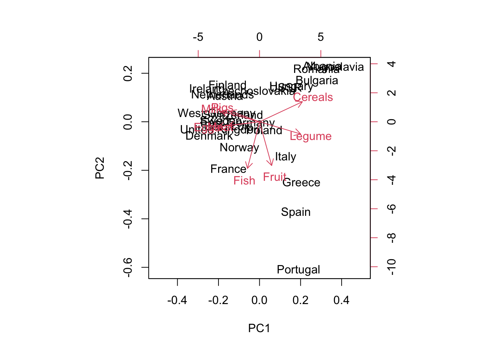

In the first exercise, we explore a low-dimensional dataset, Food.txt.
(This example is not a genomics example, however it is useful to illustrate important concepts in data exploration and dimensional reduction via PCA.)
Food.txt contains data on food consumption of a variety of food categories in European counries. First load the dataset.
food <-read.table('data/Food.txt', header=T)# we change the name from pulses to a more common name, legumecolnames(food)[7] <-'Legume'head(food) # print first 6 lines
The first thing to do after loading the dataset is to get to know its content better.
Try to find out the following information about the data:
the dimension (numbers of columns and rows)
the column names, and row names
We can also look at one food in particular, Fish: find the mean, maximum and minimum value for this variable. This is to investigate one column of the data.
Now we can make some simple visualizations. We can look at the distribution for each variable by making a histogram.
hist(food$Fish, main ='Histogram of Fish')
hist(food$Fish, breaks =20, main ='Histogram of Fish')
hist(food$Meat, main ='Histogram of Meat')
A box plot is another commonly used tool for presenting data distribution, for a few variables together. This way you can compare different foods.
# las rotates the axis text 90 degreesboxplot(food, las =2,main ='Food consumption across European countries')
We can look at pairs of food, to identify the whether there is some kind of relationship between them. For example, do countries that consume more fish also consume more meat? What about cereal and fruit?
A scatter plot with one food on its x-axis and another on the y-axis can be useful.
We can add the country names on top of the scatter plot to provide more information.
# two variablesplot(food$Fish, food$Meat, pch=20, main ='Fish vs Meat')
# to add country: run this line as well# text(food$Fish, food$Meat, labels = rownames(food))# choose aother pair of food, add country labelplot(food$Cereals, food$Fruit, main ='Cereals vs Fruit')text(food$Cereals, food$Fruit, labels =rownames(food))
You can make pair-wise scatter plots for all the food pairs. However when you have many variables, these plots become less easy to read.
# pair-wise scatterplot(food, main ='Pair-wise scatter plot')
Principal component analysis
We can use principal component analysis PCA to explore the dataset, and reveal more information beyond the original data points.
The command we use is prcomp(data, scale).
data is the dataset to carry out PCA. Sometimes you need to do some processing such as centering and scaling.
scale is an argument that asks the program to scale the data for us automatically. We specify it to be TRUE.
After running the command, you can print out the results using summary.
# need to scale the datapc_food <-prcomp(food, scale=TRUE)# pc_foodsummary(pc_food)
Importance of components:
PC1 PC2 PC3 PC4 PC5 PC6 PC7
Standard deviation 1.9251 1.2073 1.0595 0.9315 0.57322 0.52889 0.35617
Proportion of Variance 0.4632 0.1822 0.1403 0.1085 0.04107 0.03497 0.01586
Cumulative Proportion 0.4632 0.6454 0.7857 0.8942 0.93527 0.97024 0.98609
PC8
Standard deviation 0.33354
Proportion of Variance 0.01391
Cumulative Proportion 1.00000
Examine the loading (rotation). This is a \(p \times n_{pc}\) matrix where each row corresponds to one feature from the original data, and each column corresponds to one principal component PC.
loading_food <- pc_food$rotation# print out the result, but only keep 2 digitsround(loading_food, digits =2)
Scores (projections) are produced by multiplying the original \(n \times p\) data matrix and \(p \times n_{pc}\) loading matrix. The result is a \(n \times n_{pc}\) matrix where rows correspond to the rows in the original data (country names), and columns are the principal components.
You can visualize the points using a few selected PCs rather than the original data (next section).
(Optional) You can double check that the score is indeed the product of the original data (after scaling) with loading. Take Albania for example (first row of the data). Its score for PC1 is 2.94. Let us try to reproduce this number from formula.
food[1,]
Meat Pigs Eggs Milk Fish Cereals Legume Fruit
Albania 10.1 1.4 0.5 8.9 0.2 42.3 5.5 1.7
# scale the datafood_s <-scale(food)round(food_s[1,], digits =2) # after centering and scaling
Meat Pigs Eggs Milk Fish Cereals Legume Fruit
0.08 -1.83 -2.24 -1.16 -1.20 0.92 1.22 -1.35
# loading for PC1 is the first columnround(loading_food[,1], digits =2)
Meat Pigs Eggs Milk Fish Cereals Legume Fruit
-0.33 -0.31 -0.44 -0.41 -0.13 0.45 0.43 0.13
# let us muliple element by element, then sum togetherprod_by_element <-as.numeric(food_s[1,]) * loading_food[, 1]round(prod_by_element, digits =2)
Meat Pigs Eggs Milk Fish Cereals Legume Fruit
-0.03 0.58 1.00 0.47 0.15 0.42 0.53 -0.17
# sum all elements togethersum(prod_by_element)
[1] 2.943309
Another important result from the prcomp() command is the explained variance (PVE, proportion of variance explained). All PCs explain 100% of the variance; while the first PC explains the largest proportion (46%), second PC explains the second largest proportion (18.2%) and so on.
You can find the variance (squared standard deviation, sdev) using the following commands. You can compare with the results from summary(), see if they correspond.
# variance explained by each PCpc_food_var <- pc_food$sdev^2# proportionpc_food_pve <- pc_food_var/sum(pc_food_var)# print out, keep 3 digitsround(pc_food_pve, digits =3)
Biplot of the principal components displays two principal components with their labels. By default, it plots the first 2 PC; but you can also select PC1, PC3 with the choices = c(1,3) argument.
The country labels indicate the position where the original datapoints are projected onto PC1 and PC2. The closer points are clustered together, the more similar the points are. You can find the arrows pointing towards different directions, which tells additional information as in what way countries are similar.
# by default, pc1 pc2# set x-axis limit# same as biplot(pc_food, choices = c(1,2)) biplot(pc_food, xlim =c(-0.5, 0.5))

# choose pc1 and pc3biplot(pc_food, choices =c(1,3))
Now we can visualize the variance explained by the PCs, and compare with the original data features (columns). We use bar plots on the variance already computed from the previous section.
It can be seen that the first PC corresponds to the largest variance explained, the second PC corresponds to the second largest variance explained, etc.
On the other hand, the original data features have different variances, and do not seem to have obvious patterns.
par(mfrow =c(1, 2))# variance of the PCsbarplot(pc_food_var, las=2,main='Principal components', ylab='Variances',names.arg =paste('PC ',1:length(pc_food_var),sep=''))# variance of the original data variables# apply command here computes sd by columnbarplot(apply(food, 2, sd)^2, las=2, main='Original Variables', ylim=c(0,150), ylab='Variances')
Lastly, you can visualize the cumulative variance explained well.
par(mfrow =c(1,1))# PVEplot(cumsum(pc_food_pve), type='b', axes=F, xlab='number of components',ylab='contribution to total variance', ylim=c(0,1))abline(h=1, col='blue')abline(h=0.8, lty=2, col='blue')box()axis(2,at=0:10/10,labels=0:10/10)axis(1,at=1:ncol(food),labels=1:ncol(food),las=2)
Exercise 2: NCI60
Now we move to a typical large-scale biological data set.
We have already seen the NCI60 cancer cell line microarray data set, consisting of 6830 gene expression measurements on 64 cancer cell lines.
library(ISLR)nci.labs <- NCI60$labs # Sample labels (tissue type)nci.data <- NCI60$data # Gene expression data set
nci.data contains the gene expression level measured on 6830 genes. We can find out the dimension with dim() command.
nci.labs contains the labels for the cancer types. Note that some cancer types have more than one cell line, we can get a quick overview using table(). This counts how many times each cancer type is present in the labels.
Since the focus of today’s topic is unsupervised learning, we do not need to pay too much attention to the labels. However we can use the labels in the end to check whether the PCA and clustering produce meaningful results.
# what if I would like to compute the mean of each gene within each tissue type?tissue.means <-apply(nci.data, 2, function(x){tapply(x, nci.labs, mean)})dim(tissue.means)
[1] 14 6830
You can and should carry out some exploratory analysis on the data, such as finding out the means and extreme values; this is left for home practice.
Carry out PCA
The dataset is a high-dimensional one, that is the number of columns (features) are much larger than the number of rows (measurements). It is inpractical to analyze and search for hidden structures by looking at each one of the feature, and PCA is a useful tool to move forward.
We use prcomp() to produce PCA results. Set the scale = T to make sure the data is standardized to have standard deviation equal to 1 among each column.
# PCA analysis after scaling the variables to standard deviation one:pr.out <-prcomp(nci.data, scale=TRUE)
Print the summary output with summary(). Note that the result is quite long, so we didn’t print out everything; but you can execute the line and see what it does.
summary(pr.out)
Now we investigate the variance explained by the PCs. The y-axis in the plots below corresponds to the percentage (from 0 to 100%) explained.
The maximum number of PC computed in principal component analysis is the \(min\{n, p\}\). This means, for a high dimensional problem like this one, we have at most 64 PCs.
For the purpose of dimensional reduction, we do not need to keep all the PCs. We can check how many PCs explain at least a certain amount of the variance. For example, we found out that the first 24 PC and first 32 PC explained 70% and 80% of the variance. We can mark it on the plots from before.
par(mfrow=c(1,2)) # plot contains two smaller plots next to each otherplot(pve, type="o", ylab="PVE", xlab="Principal Component", col="blue")abline(v = mysel80)abline(v = mysel70, col=3)plot(cumsum(pve), type="o", ylab="Cumulative PVE", xlab="Principal Component", col="brown3")abline(v = mysel80)abline(h =80)abline(v = mysel70, col=3)abline(h =70, col=3)
If we decide to only keep the principal components that explains 70% of the variance, we end up with 24 components, which we can further analyse to better understand the relationships between the variables. For simplicity we only look at the first few components.
We plot the first few principal component score vectors, to visualize the results. The observations (cell lines) corresponding to a given cancer type will be plotted in the same colour.
Cols=function(vec){ cols=rainbow(length(unique(vec)))return(cols[as.numeric(as.factor(vec))])}# Plot the first vs second and first vs third principal component score vectors,# with colors associated to labels (using the Cols() helper function)par(mfrow=c(1,2))plot(pr.out$x[,1:2], col=Cols(nci.labs), pch=19,xlab="PC 1",ylab=" PC 2")plot(pr.out$x[,c(1,3)], col=Cols(nci.labs), pch=19,xlab="PC 1",ylab=" PC 3")legend('topleft', col=rainbow(length(unique(nci.labs))), legend=unique(nci.labs), bty='n', lwd=2, cex=.6)
Why not use biplot?
You might have realized that the plots above are essentially what biplot did in the first exercise: plotting PC1, PC2 againt each other. The reason we do not use it here is simple: by default biplot displays also the loading vectors (rotation). Given that we have 64 PCs, the final figure would be unreadable.
You can try to remove the loading vectors from biplot as an exercise.
Exercise 3: Gene expression data
(CH12Ex13 from statistical learning)
Consider again the gene expression data set “Ch12Ex13.csv” (which can be also found on the book website) that consists of 40 tissue samples with measurements on 1,000 genes.
The first 20 samples are from healthy patients, while the second 20 are from a diseased group.
Load in the data using read.csv(). You will need to select header=F.
Alternatively: load in the data using “Import dataset” in the upper right window, and click “no” on the “Heading” option.
Perform a PCA of these data and visualize the results.
Note: remember to check if the variables (genes) are on the columns in the dataset before running the PCA. If they are not: use t() to transform the dataset.
# set the path to your own!exp.data <-read.csv("data/Ch12Ex13.csv",header=FALSE)# I want each row to represent a sample, and each column a geneexp.data <-t(exp.data)dim(exp.data)
[1] 40 1000
# should have n=40 samples/rows, and 1000 columns --> OK!groups <-c(rep(1,20), rep(2,20)) # group variable
Looks like most of the principal components are needed to explain the data well. Maybe we can decide to keep 25-30 components?
Can also plot some of the first principal components
# Remember the use the helper-function to get coloursCols=function(vec){ cols=rainbow(length(unique(vec)))return(cols[as.numeric(as.factor(vec))])}par(mfrow=c(1,2)) # plot-window has two small plots next to each otherplot(pr.exp$x[,1:2], col=Cols(groups), pch=19, xlab="PC 1", ylab=" PC 2")plot(pr.exp$x[,c(1,3)], col=Cols(groups), pch=19,xlab="PC 1",ylab=" PC 3")legend('topleft', col=rainbow(length(unique(groups))), legend=paste('group ',unique(groups),sep=''), bty='n', lwd=2, cex=.6)
Source Code
---title: "R Lab (day 3): Data exploration, Principal Component Analysis"format: html: code-fold: false code-tools: true---Download datasets [here](https://github.com/ocbe-uio/course_med3007/tree/main/lab/data) or from Canvas.R script: [Code](https://github.com/ocbe-uio/course_med3007/blob/main/lab/code/MED3007_Lab2_pca.R)Lab Lecture ## Exercise 1: FoodIn the first exercise, we explore a low-dimensional dataset, `Food.txt`. (This example is not a genomics example, however it is useful to illustrate important concepts in data exploration and dimensional reduction via PCA.) `Food.txt` contains data on food consumption of a variety of food categories in European counries. First load the dataset. ```{r}#| label: pca-food-loaddata#| warning: false#| echo: truefood <-read.table('data/Food.txt', header=T)# we change the name from pulses to a more common name, legumecolnames(food)[7] <-'Legume'head(food) # print first 6 lines ```### Explore the datasetThe first thing to do after loading the dataset is to get to know its content better. Try to find out the following information about the data:* the **dimension** (numbers of columns and rows)* the **column names**, and **row names**We can also look at one food in particular, `Fish`: find the mean, maximum and minimum value for this variable. This is to investigate one column of the data.```{r}#| label: pca-food-summary#| warning: false#| echo: truedim(food)colnames(food)rownames(food)# explore one variablemean(food$Fish)max(food$Fish)min(food$Fish)```Now we investigate the data by row. Each row is a country. We can extract the data ('filter') for Norway, for exmaple.It is also easy to get data for more than one country, such as from Denmark and Sweden. ```{r}#| label: pca-food-country#| warning: false#| echo: true# subsettingfood[rownames(food) =='Norway',]food[rownames(food) %in%c('Norway', 'Denmark', 'Sweden'),]```Now we can make some simple visualizations. We can look at the distribution for each variable by making a histogram.```{r}#| label: pca-food-histogram#| warning: false#| echo: truehist(food$Fish, main ='Histogram of Fish')hist(food$Fish, breaks =20, main ='Histogram of Fish')hist(food$Meat, main ='Histogram of Meat')```A box plot is another commonly used tool for presenting data distribution, for a few variables together. This way you can compare different foods.```{r}#| label: pca-food-boxplot#| warning: false#| echo: true# las rotates the axis text 90 degreesboxplot(food, las =2,main ='Food consumption across European countries')```We can look at pairs of food, to identify the whether there is some kind of relationship between them. For example, do countries that consume more fish also consume more meat? What about cereal and fruit?A scatter plot with one food on its x-axis and another on the y-axis can be useful.We can add the country names on top of the scatter plot to provide more information.```{r}#| label: pca-food-scatter#| warning: false#| echo: true# two variablesplot(food$Fish, food$Meat, pch=20, main ='Fish vs Meat')# to add country: run this line as well# text(food$Fish, food$Meat, labels = rownames(food))# choose aother pair of food, add country labelplot(food$Cereals, food$Fruit, main ='Cereals vs Fruit')text(food$Cereals, food$Fruit, labels =rownames(food))```You can make pair-wise scatter plots for all the food pairs. However when you have many variables, these plots become less easy to read. ```{r}#| label: pca-food-scatter2#| warning: false#| echo: true# pair-wise scatterplot(food, main ='Pair-wise scatter plot')```### Principal component analysis We can use principal component analysis PCA to explore the dataset, and reveal more information beyond the original data points.The command we use is `prcomp(data, scale)`.* `data` is the dataset to carry out PCA. Sometimes you need to do some processing such as centering and scaling.* `scale` is an argument that asks the program to scale the data for us automatically. We specify it to be TRUE.After running the command, you can print out the results using `summary`.```{r}#| label: pca-food-pca#| warning: false#| echo: true# need to scale the datapc_food <-prcomp(food, scale=TRUE)# pc_foodsummary(pc_food)```Examine the **loading** (rotation). This is a $p \times n_{pc}$ matrix where each row corresponds to one feature from the original data, and each column corresponds to one principal component PC. ```{r}#| label: pca-food-loading#| warning: false#| echo: trueloading_food <- pc_food$rotation# print out the result, but only keep 2 digitsround(loading_food, digits =2)```**Scores (projections)** are produced by multiplying the original $n \times p$ data matrix and $p \times n_{pc}$ loading matrix. The result is a $n \times n_{pc}$ matrix where rows correspond to the rows in the original data (country names), and columns are the principal components. You can visualize the points using a few selected PCs rather than the original data (next section). ```{r}#| label: pca-food-scores#| warning: false#| echo: truescores_food <- pc_food$xround(scores_food, digits =2)```(Optional) You can double check that the score is indeed the product of the original data (after scaling) with loading. Take Albania for example (first row of the data). Its score for PC1 is 2.94. Let us try to reproduce this number from formula.```{r}#| label: pca-food-albania#| warning: false#| echo: truefood[1,] # scale the datafood_s <-scale(food)round(food_s[1,], digits =2) # after centering and scaling# loading for PC1 is the first columnround(loading_food[,1], digits =2)# let us muliple element by element, then sum togetherprod_by_element <-as.numeric(food_s[1,]) * loading_food[, 1]round(prod_by_element, digits =2)# sum all elements togethersum(prod_by_element)```Another important result from the `prcomp()` command is the explained variance (PVE, proportion of variance explained). All PCs explain 100% of the variance; while the first PC explains the largest proportion (46%), second PC explains the second largest proportion (18.2%) and so on. You can find the variance (squared standard deviation, `sdev`) using the following commands. You can compare with the results from `summary()`, see if they correspond.```{r}#| label: pca-food-variance#| warning: false#| echo: true# variance explained by each PCpc_food_var <- pc_food$sdev^2# proportionpc_food_pve <- pc_food_var/sum(pc_food_var)# print out, keep 3 digitsround(pc_food_pve, digits =3)# cumulative of 1st, 2nd, ... 8th PCcumsum(pc_food_pve)```### Visualize PCA resultsBiplot of the principal components displays two principal components with their labels. By default, it plots the first 2 PC; but you can also select PC1, PC3 with the `choices = c(1,3)` argument.The country labels indicate the position where the original datapoints are projected onto PC1 and PC2. The closer points are clustered together, the more similar the points are. You can find the arrows pointing towards different directions, which tells additional information as in what way countries are similar.```{r}#| label: pca-food-biplot#| warning: false#| echo: true# by default, pc1 pc2# set x-axis limit# same as biplot(pc_food, choices = c(1,2)) biplot(pc_food, xlim =c(-0.5, 0.5))# choose pc1 and pc3biplot(pc_food, choices =c(1,3)) ```Now we can visualize the variance explained by the PCs, and compare with the original data features (columns). We use bar plots on the variance already computed from the previous section. It can be seen that the first PC corresponds to the largest variance explained, the second PC corresponds to the second largest variance explained, etc.On the other hand, the original data features have different variances, and do not seem to have obvious patterns.```{r}#| label: pca-food-plot_var#| warning: false#| echo: truepar(mfrow =c(1, 2))# variance of the PCsbarplot(pc_food_var, las=2,main='Principal components', ylab='Variances',names.arg =paste('PC ',1:length(pc_food_var),sep=''))# variance of the original data variables# apply command here computes sd by columnbarplot(apply(food, 2, sd)^2, las=2, main='Original Variables', ylim=c(0,150), ylab='Variances')```Lastly, you can visualize the **cumulative** variance explained well.```{r}#| label: pca-food-plot_pve#| warning: false#| echo: truepar(mfrow =c(1,1))# PVEplot(cumsum(pc_food_pve), type='b', axes=F, xlab='number of components',ylab='contribution to total variance', ylim=c(0,1))abline(h=1, col='blue')abline(h=0.8, lty=2, col='blue')box()axis(2,at=0:10/10,labels=0:10/10)axis(1,at=1:ncol(food),labels=1:ncol(food),las=2)```## Exercise 2: NCI60Now we move to a typical large-scale biological data set.We have already seen the NCI60 cancer cell line microarray data set, consisting of 6830 gene expression measurements on 64 cancer cell lines.```{r}#| label: pca-nci-loaddata#| warning: false#| echo: truelibrary(ISLR)nci.labs <- NCI60$labs # Sample labels (tissue type)nci.data <- NCI60$data # Gene expression data set````nci.data` contains the gene expression level measured on 6830 genes. We can find out the dimension with `dim()` command.`nci.labs` contains the labels for the cancer types. Note that some cancer types have more than one cell line, we can get a quick overview using `table()`. This counts how many times each cancer type is present in the labels.Since the focus of today's topic is unsupervised learning, we do not need to pay too much attention to the labels. However we can use the labels in the end to check whether the PCA and clustering produce meaningful results. ```{r}#| label: pca-nci-summary#| warning: false#| echo: truedim(nci.data)table(nci.labs)# what if I would like to compute the mean of each gene within each tissue type?tissue.means <-apply(nci.data, 2, function(x){tapply(x, nci.labs, mean)})dim(tissue.means)```You can and should carry out some exploratory analysis on the data, such as finding out the means and extreme values; this is left for home practice.### Carry out PCAThe dataset is a high-dimensional one, that is the number of columns (features) are much larger than the number of rows (measurements). It is inpractical to analyze and search for hidden structures by looking at each one of the feature, and PCA is a useful tool to move forward.We use `prcomp()` to produce PCA results. Set the `scale = T` to make sure the data is standardized to have standard deviation equal to 1 among each column.```{r}#| label: pca-nci-pc#| warning: false#| echo: true# PCA analysis after scaling the variables to standard deviation one:pr.out <-prcomp(nci.data, scale=TRUE)```Print the summary output with `summary()`. Note that the result is quite long, so we didn't print out everything; but you can execute the line and see what it does.```{r}#| label: pca-nci-pcsummary#| warning: false#| echo: true#| eval: falsesummary(pr.out)```Now we investigate the variance explained by the PCs. The y-axis in the plots below corresponds to the percentage (from 0 to 100%) explained. ```{r}#| label: pca-nci-plotpc#| warning: false#| echo: truepr.var <- pr.out$sdev^2pve <- pr.var/sum(pr.var)pve <-100*pve # display percentagepar(mfrow=c(1,2))plot(pve, type="o", ylab="PVE (%)", xlab="Principal Component", col="blue")plot(cumsum(pve), type="o", ylim =c(0, 100),ylab="Cumulative PVE (%)", xlab="Principal Component", col="brown3")```### How many PCs to keep?The maximum number of PC computed in principal component analysis is the $min\{n, p\}$. This means, for a high dimensional problem like this one, we have at most 64 PCs. For the purpose of dimensional reduction, we do not need to keep all the PCs. We can check how many PCs explain at least a certain amount of the variance. For example, we found out that the first 24 PC and first 32 PC explained 70% and 80% of the variance. We can mark it on the plots from before.```{r}#| label: pca-nci-keeppc#| warning: false#| echo: truemysel70 <-which(cumsum(pve) >70)[1] # explains 70% mysel80 <-which(cumsum(pve) >80)[1] # explains 80% c(mysel70, mysel80)par(mfrow=c(1,2)) # plot contains two smaller plots next to each otherplot(pve, type="o", ylab="PVE", xlab="Principal Component", col="blue")abline(v = mysel80)abline(v = mysel70, col=3)plot(cumsum(pve), type="o", ylab="Cumulative PVE", xlab="Principal Component", col="brown3")abline(v = mysel80)abline(h =80)abline(v = mysel70, col=3)abline(h =70, col=3)```If we decide to only keep the principal components that explains 70% of the variance, we end up with 24 components, which we can further analyse to better understand the relationships between the variables. For simplicity we only look at the first few components.We plot the first few principal component score vectors, to visualize the results. The observations (cell lines) corresponding to a given cancer type will be plotted in the same colour.```{r}#| label: pca-nci-plot2#| warning: false#| echo: trueCols=function(vec){ cols=rainbow(length(unique(vec)))return(cols[as.numeric(as.factor(vec))])}# Plot the first vs second and first vs third principal component score vectors,# with colors associated to labels (using the Cols() helper function)par(mfrow=c(1,2))plot(pr.out$x[,1:2], col=Cols(nci.labs), pch=19,xlab="PC 1",ylab=" PC 2")plot(pr.out$x[,c(1,3)], col=Cols(nci.labs), pch=19,xlab="PC 1",ylab=" PC 3")legend('topleft', col=rainbow(length(unique(nci.labs))), legend=unique(nci.labs), bty='n', lwd=2, cex=.6)```::: callout-note## Why not use biplot?You might have realized that the plots above are essentially what `biplot` did in the first exercise: plotting PC1, PC2 againt each other. The reason we do not use it here is simple: by default `biplot` displays also the loading vectors (rotation). Given that we have 64 PCs, the final figure would be unreadable. You can try to remove the loading vectors from biplot as an exercise. :::## Exercise 3: Gene expression data(CH12Ex13 from statistical learning)Consider again the gene expression data set "Ch12Ex13.csv" (which can be also found on the [book website](www.StatLearning.com)) that consists of 40 tissue samples with measurements on 1,000 genes.The first 20 samples are from healthy patients, while the second 20 are from a diseased group.Load in the data using read.csv(). You will need to select header=F.Alternatively: load in the data using "Import dataset" in the upper right window, and click "no" on the "Heading" option.Perform a PCA of these data and visualize the results. Note: remember to check if the variables (genes) are on the columns in the dataset before running the PCA. If they are not: use t() to transform the dataset.```{r}#| label: pca-ge-loaddata#| warning: false#| echo: true# set the path to your own!exp.data <-read.csv("data/Ch12Ex13.csv",header=FALSE)# I want each row to represent a sample, and each column a geneexp.data <-t(exp.data)dim(exp.data)# should have n=40 samples/rows, and 1000 columns --> OK!groups <-c(rep(1,20), rep(2,20)) # group variable```Carry out PCA```{r}#| label: pca-ge-pca#| warning: false#| echo: true# PCApr.exp <-prcomp(exp.data, scale=TRUE)# Plot proportion of variance explainedpr.var <- pr.exp$sdev^2pve <- pr.var/sum(pr.var)pve <-100*pvepar(mfrow=c(1,2))plot(pve, type="o", ylab="PVE", xlab="Principal Component", col="blue")plot(cumsum(pve), type="o", ylab="Cumulative PVE", xlab="Principal Component", col="red")```Looks like most of the principal components are needed to explain the data well. Maybe we can decide to keep 25-30 components?Can also plot some of the first principal components```{r}#| label: pca-ge-plot#| warning: false#| echo: true# Remember the use the helper-function to get coloursCols=function(vec){ cols=rainbow(length(unique(vec)))return(cols[as.numeric(as.factor(vec))])}par(mfrow=c(1,2)) # plot-window has two small plots next to each otherplot(pr.exp$x[,1:2], col=Cols(groups), pch=19, xlab="PC 1", ylab=" PC 2")plot(pr.exp$x[,c(1,3)], col=Cols(groups), pch=19,xlab="PC 1",ylab=" PC 3")legend('topleft', col=rainbow(length(unique(groups))), legend=paste('group ',unique(groups),sep=''), bty='n', lwd=2, cex=.6)```